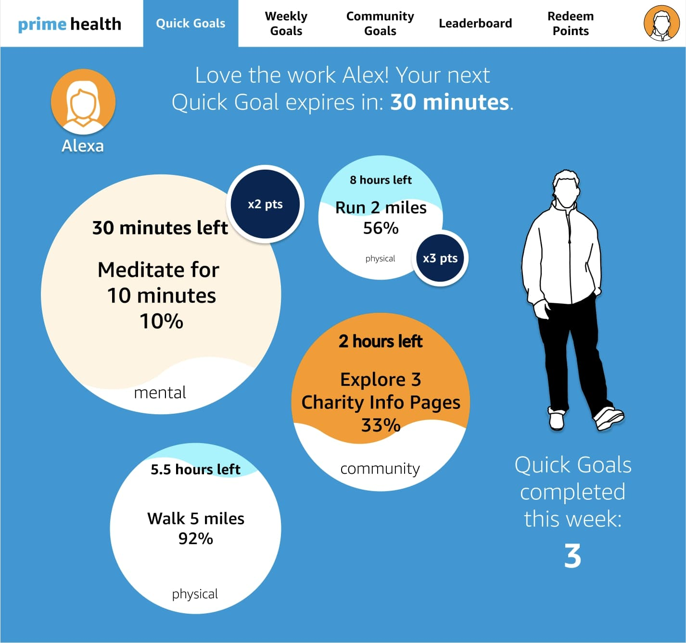
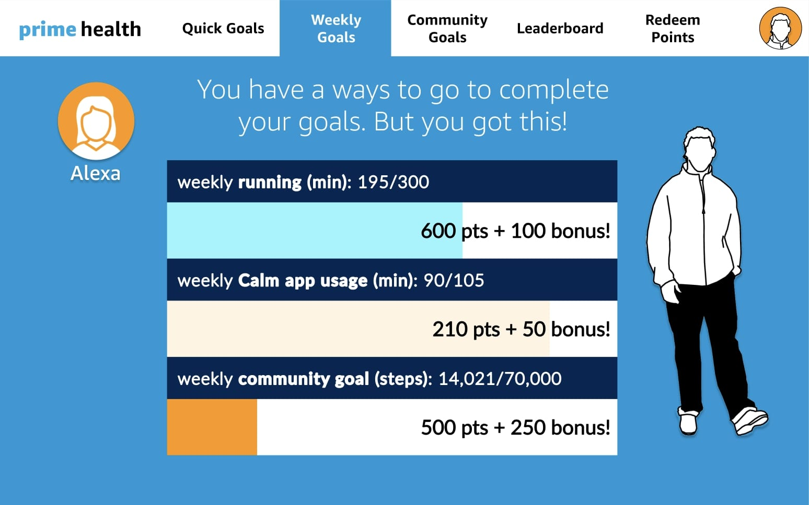
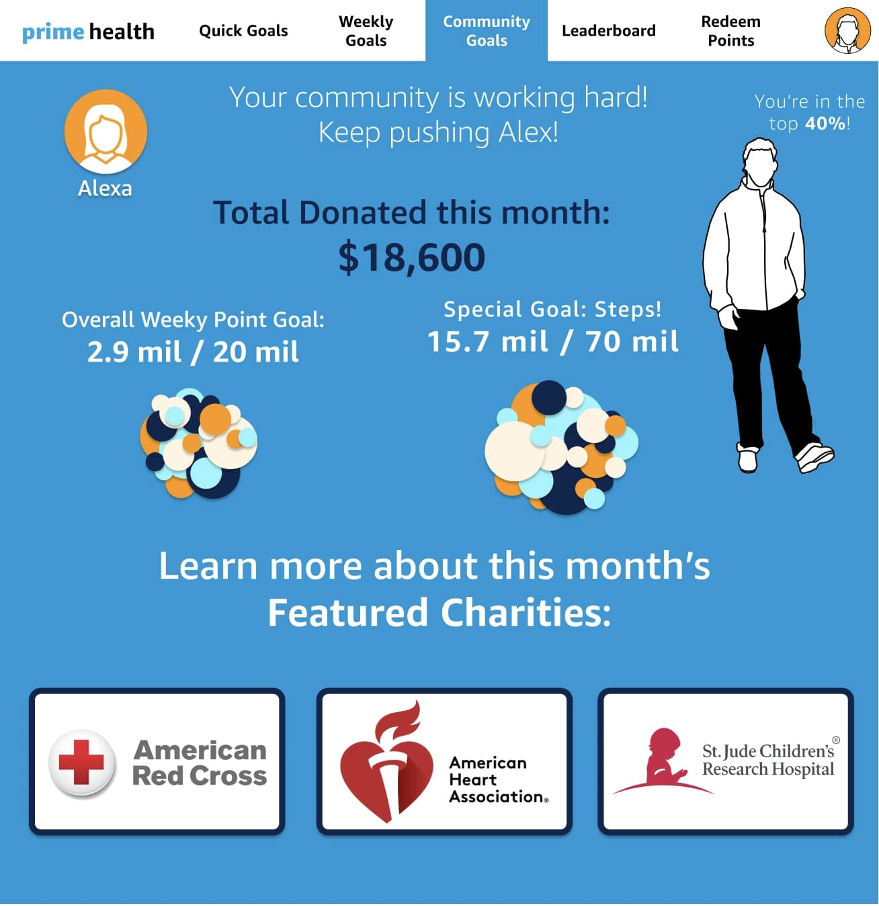
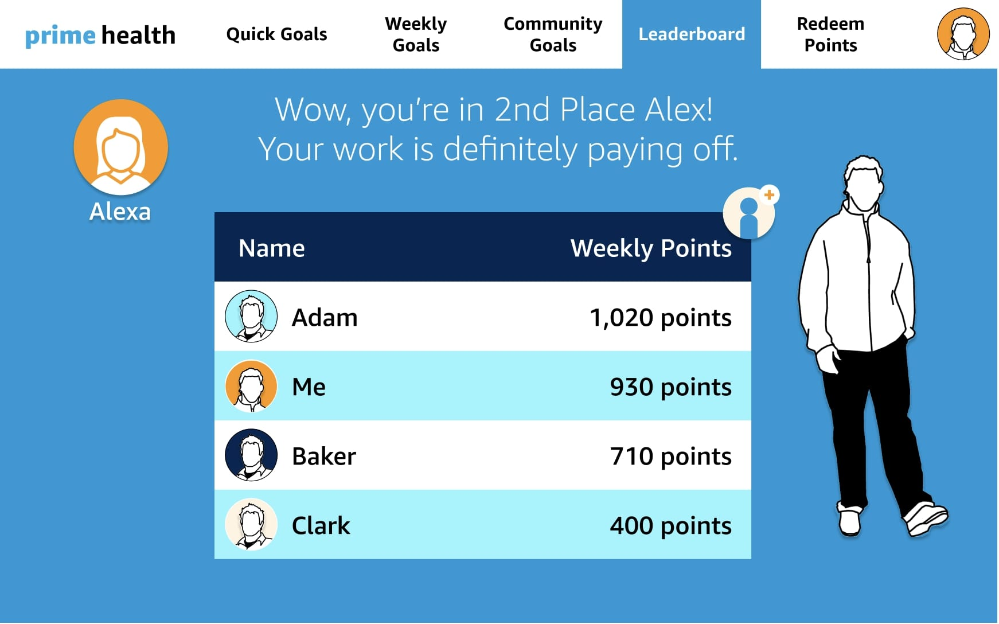
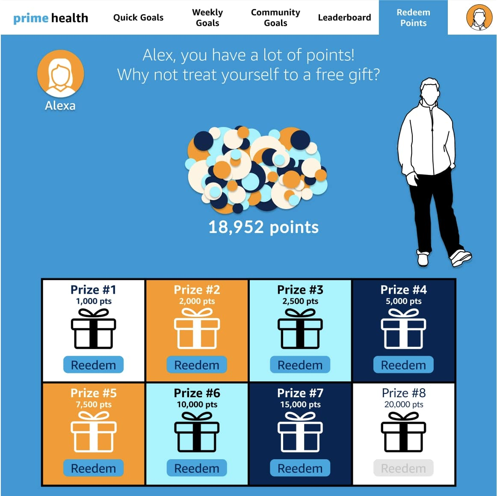
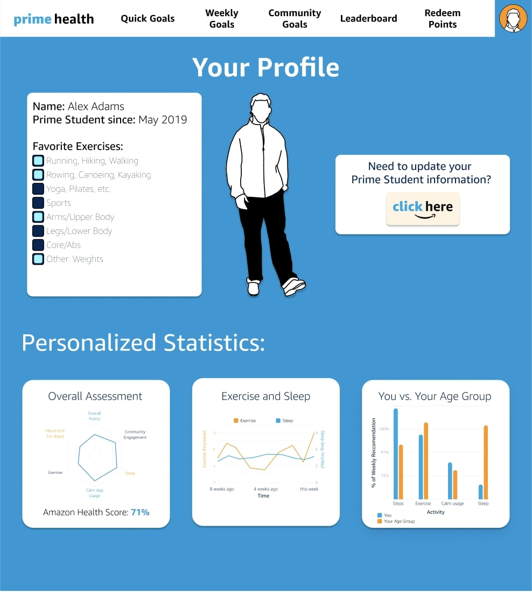

| Dates | Nov - Dec 2021 |
|---|---|
| Role | Design Lead |
| Team | 17 people |
| Skills | Web Design, UX Research, Figma, Product Management |
College Students want to prioritize their health, but don't have the time, knowledge or motivation on how to do it.
Amazon wanted a marketing strategy for Amazon Prime Student. Our product team decided that we should create a gamified health platform, but wasn't clear on the details. I established the UX problem statement and created an "Prime Health" website designed to make it easy and fun for college students to prioritize their health while engaging with Amazon Prime Student benefits.
For an Amazon Prime Student Case Competition, Amazon wants an Amazon Prime Student marketing plan targeted at Gen Z/current college freshman. After doing some research and establishing our course of action, our product team pivoted to a more competitive idea. Our product team proposed a single, centralized Amazon Prime Student Health platform that, with the right features, would help Gen Z engage with Prime Student benefits. It'd also make Amazon a more palatable company to purchase from, as they'd be supporting student health.
I (as the Design Lead and only UX Designer) had to create a mockup of the platform. While the product team had a rough idea of the features they wanted (a dashboard, some goals, and a leaderboard), they didn't have any of the specifics of the information they wanted to include, data they wanted to display, logistical details, etc. Thus, much of these details were left for me to explore.
At the current stage of the project, we had consumer research but no information on student's health prioritization or pain points. Since I was beginning consumer interviews with the primary research team, I proposed additional health questions to evaluate the solution's overall potential. Since we were forming our product in parallel, however, we were restricted in question specificity, since we didn't know what our health platform would entail.
The health questions investigated user's perceived importance of health and exercise, their current (time) investments into health and exercise, and any particular metrics/health aspects they were interested in. While many of the college freshmen wanted to prioritize health and exercise, many of them didn't have enough time to dedicate it. Users didn't have particular metrics they wanted to see; since they didn't have workouts or regular exercise sessions, they didn't know what should be measured.
From here, we found a problem our theoretical health platform could solve: College Students want to prioritize their health, but don't have the time or knowledge on how to do it.
For the design process we had to create the whole UX in about two weeks, due to our recent pivot. Our new Prime Health platform revolved around a centralized dashboard with some sort of health statistics, as well as emphasizing our three main areas of focus: physical health, mental health, and community health. The user data would be gathered from the Amazon Halo Band, i.e. an Amazon brand smart watch.
Prototype Goals and Low-Fidelity (Lo-fi) PrototypeOur lo-fi prototype consisted of a rough mockup given by one of the members of the product team:
To convert this to a high-fidelity (hi-fi) prototype, I wanted to emphasize a few of important features from the original prototype goals:
While Amazon provides a Prime Student style guide, I had a few overarching design themes to optimize it for college students:
The main dashboard page was designed to give a brief snapshot of the user's progress and to celebrate or encourage the user's current engagement levels. It features a central semi-circle that tracks the user's weekly health progress along (our) three dimensions: physical, mental, and community health. Each of these health aspects are tracked with a different metric (see weekly goals) and have an associated color, which stays consistent across pages.
The main dashboard statistics were influenced by primary research/interviews; since our interviewed college freshmen didn't know what metrics would be best, I chose simple measurements that were easy to quantify and compare, like steps and time.
The “Quick Goals” page showcases challenges the user can complete within a limited amount of time to receive extra points. Since each bubble represents a goal, I designed the bubbles to expand as the time decreased, to further emphasize challenges that were about to expire (or “pop!”). Its background color also matches its respective health aspect.
The page also features bubbles with the same “waves” to give the website a sense of cohesion. The goals also feature point multipliers for health categories that the user could spend more time practicing/emphasizing. For example, students who don't like to run (and often don't complete running goals) would be given bonus points for running goals.
The “Weekly Goals” page measures the user's progress on our three aspects of health (physical, mental, community) based on a chosen metric each week. Users also receive bonus points for completing each weekly goal.
The “Community Goals” page is designed to start building a community of Prime Students through collaboration on a collective community goal that changes each month. Amazon would match donations based on community point totals. This allows Amazon to celebrate Gen Z's philanthropic desires while painting Amazon in a more desirable light.
The page also features select charities each month allowing Gen Z to learn about and/or support new causes.
The “Leaderboard” page allows users to compete with their friends to gain the most points and see their profiles. Each of the profiles includes the user's (selected) favorite exercises and an option to give points to each other (which was found in the user interviews to be an interesting/engaging feature). The leaderboard would create maintained interest in the app and fuel users' motivation through competition.
The “Redeem Points” page is where users can redeem their points for prizes, incentivizing students to participate. These prizes would be related to Prime Student benefits, since the website is being pitched as a marketing tool for Amazon. These include things like “free 1 month Course Hero trial,” “$20 Amazon gift card,” “1 free article of clothing from Prime Wardrobe,” and more.
The “Profile” page allows users to designate their favorite exercises for their profile and see their overall health statistics. This includes a holistic Prime Health Score (To easily gauge their progress), exercise and sleep levels, and comparisons with the users age group.
Being the sole UX designer and the design lead with only one other designer, all of the project design responsibility fell on my hands. Before our strategy pivot, my only responsibility was the case document design. However, we were now responsible for prototype mockups of our Prime Health platform, with a loose framework provided by the product team. Thus, I took on the responsibility to convert these ideas into a prototype with only a month before the case was due.
With so little time to finish the design work for the case, I had to arrange how to fit in the rest of the design work within the next month between two people. We now had website UX deliverables in addition to the overall case design and implementation. Due to the tight timeline and unfinalized strategy, the design work had to happen in parallel with the product team's current deadlines.
To fit everything in on time, I created a rough timeline of all the tasks we needed to complete and divided them among our two designers based on our respective strengths. Since we were both full-time students, however, the deadlines had to be flexible and accommodate for the final exam season.
The design work helped solidify our overall case strategy by providing concrete visuals for the judges. Our case competition team was awarded "commendable" by the American Marketing Association judges.
This project taught me how to work with non-designers and turn their ideas into a full-fledged design. This meant understanding the core vision of the project and using their vision as a guideline to designing a website. To do this, I also had to find the core UX problem statement within their proposal. Since the product team simply wanted a “Health Website”, I had to find a relevant problem that the platform would be solving. Finally, I had to develop some project management skills by effectively dividing work among two people in order to finish the project on time.
If I had more time, it would be nice to actually go through the full design process and iterate through platform features, conduct usability tests, and possibly even try website implementation. With more people, I could also focus more on honing in on the problem statement with more in-depth interviews and more detailed idea generation. Though this project was slightly backwards (i.e. receiving the solution before the problem) due to the timeline, I think we still managed to discover and solve a relevant problem while simultaneously creating a product that satisfies the main case goals.